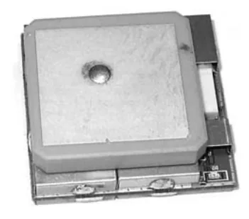
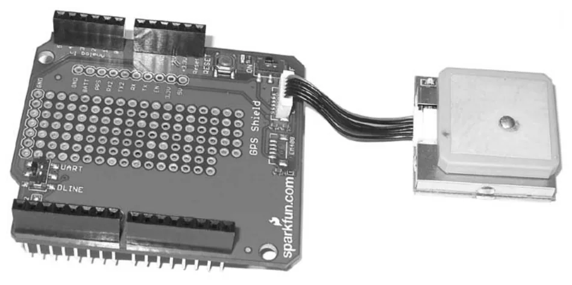
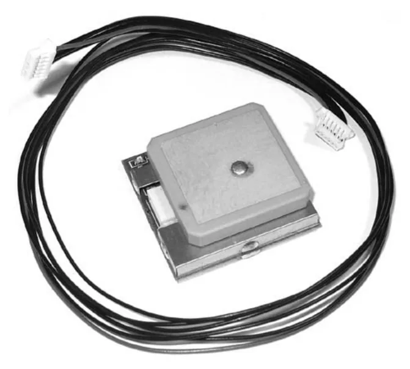

The Global Positioning System (GPS) is a satellite-based navigation system that sends data from satellites orbiting Earth to GPS receivers on the ground that can use that data to determine position and the current time anywhere on Earth. You are probably already familiar with GPS navigation devices used in cars or on your cell phone.
Although we can’t create detailed map navigation systems with our Arduino, we can use a GPS module to determine position, time, and your approximate speed (if you’re traveling). We’ll do this by using the EM406 GPS receiver module shown in Figure 13-1.

To use this receiver, you’ll need the GPS shield kit from SparkFun (part number RTL-10709) shown in Figure 13-2. This part includes the receiver, a matching Arduino shield, and the connection cable.

You should also purchase a 1-foot-long cable (SparkFun part number GPS-09123), as shown in Figure 13-3, which will make placement of the receiver much simpler.
